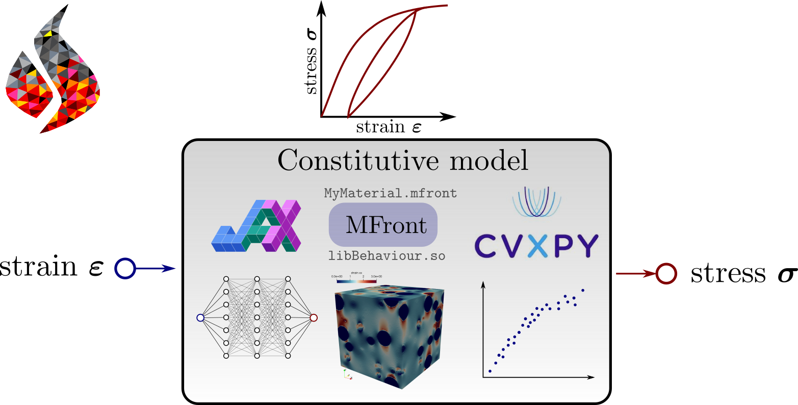

Documentation#
{kind=link}
See also
This project extends the mgis.fenics package dedicated to binding MFront with the legacy FEniCS version.
Introduction#
dolfinx_materials is a Python add-on package to the dolfinx interface to the FEniCSx project.
It enables the user to define complex material constitutive behaviors which are not expressible using classical UFL operators.
Github repository: bleyerj/dolfinx_materials
Online documentation: https://bleyerj.github.io/dolfinx_materials/
Features#
Current version supports FEniCSx version 0.8.0.
The library supports in particular:
JAX-based implementations of constitutive relations
Python-based constitutive relations, using
numpy/scipy(slow)MFront constitutive behaviors compiled with the
genericinterface, relying on the MFrontGenericInterfaceSupport projectconstitutive relations based on inference of trained Neural Networks
constitutive relations solved using external libraries including convex optimization libraries such as cvxpy
Disclaimer: The following functionalities are not currently available but should in theory be possible to implement relatively easily. Contributions are most welcome!
This library should also help you in:
writing additional interface to other material libraries such as UMATs of Abaqus for instance
performing multi-scale simulations (FE²) where constitutive update is obtained from the solution of a problem formulated on a RVE.
implementing data-driven constitutive models
Prerequisites#
dolfinx_materials requires:
FEniCSx (v.0.8), see installation instructions here.
jax for JAX-based materials. JAX can be simply installed via
pip:
pip install jax --user
See JAX installation instructions for more details about GPU acceleration.
Optional for MFront behaviors#
You must install the TFEL project to be able to compile MFront behaviors (
.mfrontfiles). In particular, the project requires Boost and Boost-Python libraries.The MFrontGenericInterfaceSupport (
mgis) package with Python binding must then be installed to load such compiled behaviors withindolfinx.
Installation and usage#
Simply clone the dolfinx_materials public repository
https://github.com/bleyerj/dolfinx_materials
and install the package by typing
pip install dolfinx_materials/ --user
License#
All this work is licensed under the Creative Commons Attribution-ShareAlike 4.0 International License  .
.
Citing#
The project can be cited from Zenodo:

@software{bleyer2024dolfinx_materials,
author = {Bleyer, Jeremy},
title = {{dolfinx\_materials: A Python package for advanced
material modelling}},
month = oct,
year = 2024,
publisher = {Zenodo},
version = {v0.3.0},
doi = {10.5281/zenodo.13882183},
url = {https://doi.org/10.5281/zenodo.13882183}
}
Papers related to the MFront and MGIS projects can be cited as:

@article{helfer2020mfrontgenericinterfacesupport,
title={The MFrontGenericInterfaceSupport project},
author={Helfer, Thomas and Bleyer, Jeremy and Frondelius, Tero and Yashchuk, Ivan and Nagel, Thomas and Naumov, Dmitri},
journal={Journal of Open Source Software},
volume={5},
number={48},
pages={1--8},
year={2020},
publisher={Open Journals}
}
@article{helfer2015introducing,
title={Introducing the open-source mfront code generator: Application to mechanical behaviours and material knowledge management within the PLEIADES fuel element modelling platform},
author={Helfer, Thomas and Michel, Bruno and Proix, Jean-Michel and Salvo, Maxime and Sercombe, J{\'e}r{\^o}me and Casella, Michel},
journal={Computers \& Mathematics with Applications},
volume={70},
number={5},
pages={994--1023},
year={2015},
publisher={Elsevier}
}
About the author#
Jeremy Bleyer is a researcher in Solid and Structural Mechanics at Laboratoire Navier, a joint research (UMR 8205) of Ecole Nationale des Ponts et Chaussées, Université Gustave Eiffel and CNRS.